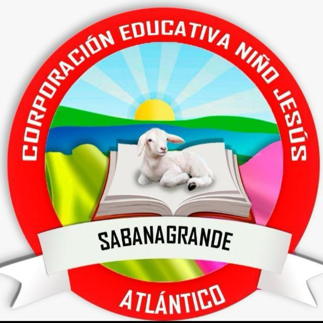

Abriendo caminos con pasos de excelencia.
Aquí irá la información de la historia del colegio.
Este espacio será reemplazado posteriormente por la información real.
En su misión pretende mediante la investigación generar estrategias que permitan brindar a los estudiantes una formación inducida hacia el conocimiento, los valores y el compromiso social, a través de la implementación de un modelo educativo basado en el desarrollo humano integral que permita el fortalecimiento personal, familiar, de la capacidad investigativa, el impulso de una cultura de innovación, renovación y emprendimiento para de esta manera mejorar la calidad de vida de nuestra comunidad educativa.
La Corporación Educativa Niño Jesús se vislumbra como la Institución Educativa de carácter privado de gran prestigio y empeño; a través de un servicio educativo de calidad basado en el desarrollo de competencias y actitudes positivas direccionadas a la formación de niños, niñas y adolescentes investigadores y transformadores de su entorno mediante el desarrollo de proyectos de ciencia, emprendimiento, cultura y tecnología.